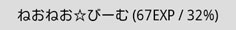
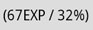

-
ねおねお☆びーむ
をタップ
TLにBEAMを照射（ツイート）します。とりあえず押してみりゃわかる。
照射目標を入力しておくと、リプライになります。
-
ねおふぁぼ★びーむ
を長押し
照射目標のツイートを遡ってふぁぼる。照射目標が入力されていないと自分のツイートをふぁぼることになる。
遡れるツイート数＝最大出力
-
経験値
%の表記は最大出力＝BEAMの最大威力などに影響する。
照射したBEAMの「！」の数だけ溜まる。ねおふぁぼ★びーむでも経験値は溜まる。
BEAMの攻撃を受けるとその威力分経験値が削られる。
-
特殊機能
-
＼おーぷんふぁいあ／

【照準を合わせる】をしたときに自動でツイートします。
-
あくてぃぶ・ぷろてくしょん・しすてむ
BEAMの攻撃を受けた時、自動でBEAMを撃ち返すSystemです。
-
-
command
照射目標欄に入力して【ねおねお☆びーむ】をタップ
Tweet mode:NORMAL時は使ってもそのままツイートされるだけなので注意。
-
command:TweetEXP
現在のEXPとかをツイートします。
-
command:UnlimitedNeoneoBeam
リミッターを外してBEAMを照射します。10000EXP以上のねおねお☆びーまーにしか使えません。
-
command:Ishitsubute
┗(↑o↑)┛ｴﾝﾇﾇﾇﾇｳｳﾝﾝﾝﾝﾝＷｗｗｗＷＷｗｗ┏(↑o↑)┓ｴﾇｳｩｩｩｩﾝwwwwwww
-
command:Barusu
ラピュタを崩壊させます。
-